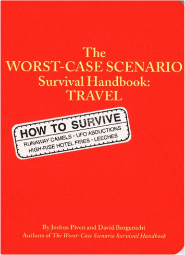
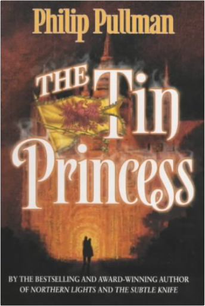
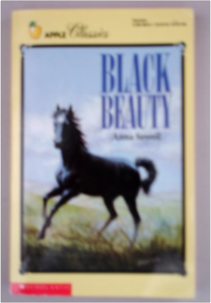

Red WyvernKatharine Kerr Red WyvernKatharine Kerr  Book nine of the celebrated Deverry series, an epic fantasy rooted in Celtic mythology that intricately interweaves human and elven history over several hundred years. A new chapter of the history of the kingdom of Deverry - an ideal starting point for newcomers to Katharine Kerr's gorgeous epic, and a satisfying continuation of the saga for those readers who have followed the series through its previous incarnations. In Cengarn, Rhodry of the silver daggers - half-elven, half-human - is beset by strange dreams. A dark-haired enchantress, the Raven Woman, is haunting his sleep, and he can find no release, even in the arms of Dallandra, his lover. Little does he know that his feud with the Raven Woman goes back over three hundred years, to a time when the very throne of Deverry stood under threat of civil war. The Worst Case Scenario Survival Handbook: TravelJoshua Piven, David Borgenicht If you have to leave home, TAKE THIS BOOK! The team that brought you The Worst-Case Scenario Survival Handbook now helps you navigate the perils of travel. Learn what to do when the tarantula crawls up your leg, the riptide pulls you out to sea, the sandstorms headed your way, or your camel just wont stop. Find out how to pass a bribe, remove leeches, climb out of a well, survive a fall onto subway tracks, catch a fish without a rod, and preserve a severed limb. Hands-on, step-by-step instructions show you how to survive these and dozens of other adventures. An appendix of travel tips, useful phrases, and gestures to avoid will also ensure your safe return. Because you just never know... Tin PrincessPhilip Pullman Sixteen-year-old Becky is about to have her life changed. A dramatic explosion is only the start of her incredible adventure. As maid to the cockney Crown Princess of a tiny kingdom in Europe, she is plunged in a turmoil of murder and intrigue. Black BeautyAnna Sewell Heartbroken when his beloved Squire Gordon is forced to sell him, Black Beauty finds a new life of cruelty and neglect under masters that overwork him, and when his knees are broken in an accident, nobody wants the beautiful thoroughbred. Reprint. |


 Made with Delicious Library
Made with Delicious LibrarySpringfield, State zipflap congrotus delicious library Doddridge, Edward